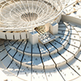
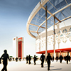
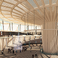
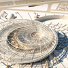
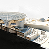
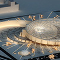
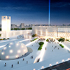

Designed by
Architect hatem fayed & Architect Ahmed Diaa
Location
Giza-EGYPT
Client
Bibliotheca of Alexandria
Status
Concept design stage
Project year
2016
Science city emerges from an origin just like the tree which grows out of one seed.
As the sky image reflects on the horizon; the science museum's image is also reflected underground in
the same form but in another function which is the research center, that to resemble the inter relation
connecting two correlative parts; first: the scientific research (root of the museum), second: the museum
exhibition (the product of this research), as in the tree with roots underground while flowers and fruits
aboveground. Science city expands in a concentric order from an origin in all directions which is the
same law that governs the expansion of science and knowledge from one origin.
Physical structure
The geometric structure of the science city repeats itself in a self-similar way and on different levels.
Its basic structure’s order is the same order of its construction system, the same order of leveling
the project into several hierarchal steps, landscaping and also lighting distribution all across the
city.
The science city consists of two major parts: the research center and the museum exhibition. Each of
them is a reflection to the other. The research center goes downward while the exhibition halls go upward.
The research center resembles the roots of the tree which search for food and suck it from beneath the
ground and then pump it to the tree body above the ground which is the exhibition halls that display
the fruits of the work of the scientific research center .
بنية المدينة المعنوية :
تنمو مدينة العلوم من نقطة اصل مثلما تنمو الشجرة من البذرة . وتنقسم مدينة العلوم الى شقين اساسيين
مركز الابحاث وقاعات العرض المتحفى . ويمثل كل منهما انعكاسا للاخر فمركز الابحاث يتجه الى اسفل واما
قاعات العرض المتحفى فتنمو الى اعلى . ويقوم مركز الابحاث بمهمة جذور الشجرة التى تبحث فى باطن الارض
عن الغذاء وتمتصه وتضخه فى صورة غذاء الى جسم الشجرة الموجود فوق سطح الارض وهو هنا قاعات العرض التى
تعرض ثمرة ما توصلت اليه عمليات البحث العلمى التى تمت فى مركز الابحاث . فمركز الابحاث والمتحف العلمى
شقان متلازمان مثل جذر الشجرة تحت الارض وجسمها وثمرتها فوق سطح الارض .
تتمدد بنية مدينة العلوم بشكل مشع من نقطة واحدة فى جميع الاتجاهات وهو القانون الذى يحكم عملية توسع
العلوم والمعارف واصلهم فى الحقيقة واحد وكلما زادت المعرفة تشعبت وتمددت وتباعدت المسافات بين فروعها
. ومثلما تنعكس صورة السماء على صفحة الارض فان متحف العلوم تنعكس صورته وتظهر مرة اخرى فى مركز الابحاث
فى باطن الارض حيث يتشابهان ظاهريا فى بنيتهما تعبيرا عن العلاقة التبادلية الرابطة بين البحث العلمى
والعرض المتحفى لمنتج البحث العلمى .
البنية المادية :
صالات العرض المتحفى ومركز الابحاث تنتظم فى وحدة عضوية واحدة فى صورة مصاطب دائرية هلالية متدرجة . تنبع من نقطة الاصل المتمثلة
فى صالة التوجيه الاساسية وتمتد الى اعلى حيث صالات العرض المتحفى والى اسفل حيث مركز الابحاث .
تمثل صالة التوجية الاساسية مركز المشروع التى تربط كل عناصر المشروع وتحمل عناصر الحركة والتوجيه الى اعلى حيث يوجد العرض المتحفى
والى اسفل حيث يوجد مركز الابحاث واسفلها توجد قاعة المؤتمرات .
المتحف تمتد اجزاءة ما بين صالة التوجية وصالة العرض المتحفى ذات الميزانين والتى تطل على مركز المشروع من خلال تراس ذو شكل هلالى
وتؤدى الى سطح حديقة البحث العلمى فى نهاية رحلة العرض المتحفى . ويعلو المتحف سقف ذو نظام ذكى يعالج
الضوء وحركة الهواء صيفا وشتاءا ليحقق اقل احتياج للطاقة ويساعد فى تقليل الاضاءة الصناعية الى الحد
الادنى .
مركز الابحاث يمتد فى مستويين متدرجين اسفل حديقة الابحاث وتطل جميع اجزاءه الى الخارج بصورة مشعة ممتده من المركز الى الخارج
فى عدة اتجاهات وهنا يظهر الفارق ما بين تنظيم المتحف وتنظيم مركز الابحاث ، فبينما تطل صالات المتحف
على المركز ، نجد ان مركز الابحاث يطل للخارج بشكل مشع فى عدة اتجاهات مما يناسب طبيعة البحث العلمى
التى تبحث تتسم بالبحث فى جميع الابجاهات .